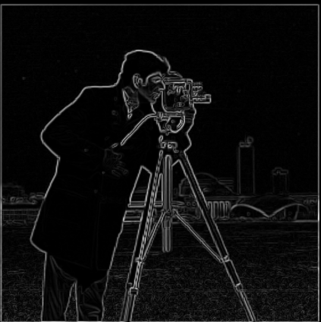
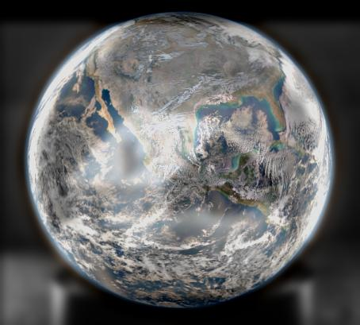

CS 180: Fun with Filters and Frequencies
|
IntroductionIn this project, we explore fundamental techniques in image manipulation through the use of filters and frequencies. Our focus is their application in edge detection, image sharpening, hybrid image generation, and multi-resolution blending. |
1. Fun with Filters |
1.1. Finite Difference OperatorsWe first look at the finite difference operators for edge detection. They are \(D_x = [1, -1]\) and \(D_y = [1, -1]^T\), used as approximations of the first derivative in the horizontal and vertical directions, respectively. It is important to note that applying \(D_x\) captures vertical edges, while \(D_y\) captures horizontal edges. We can understand this intuitively by considering how there wouldn't actually be a significant difference between laterally adjacent pixels on a horizontal edge. For practical use, let's consider an image \(img\). We obtain gradients \(G_x = img * D_x\) and \(G_y = img * D_y\) through convolving \(img \) with each of the filters. These are essentially partial derivatives of the image w.r.t. \(x\) and \(y\). We then compute gradient magnitude \(G_{magnitude} = (G_x^2 + G_y^2)^{1/2}\), which represents the strength of the edges. Finally, we binarize the gradient magnitude using a qualitatively chosen threshold to receive a binary image \(img_{edges}\). Let's observe these operations performed on the image "cameraman.png". The edges were computed with \(threshold = 0.3\). 
Cameraman \( G_x \) \( G_y \) \( G_{magnitude} \) Cameraman Edges |
1.2. Derivative of Gaussian FilterThe finite difference operators performed reasonably well, though we notice that the edges appear somewhat jagged and that there are quite a few noisy artifacts. We can address this by utilizing our good friend, the Gaussian kernel. We are familiar with the notion of blurring an image using a 2D Gaussian, and this is precisely how we will remove the noise in our image. There are two ways in which we can do this, and they yield identical results. First, we can blur our image with our Gaussian, and then apply the previous finite difference edge detection. We call this operation \(DoG_1\). Alternatively, we can first convolve a kernel \(K\) with the finite difference operators to obtain \(K_x = K * D_x \) and \(K_y = K * D_y \). The following diagram illustrates how this may look for a Gaussian kernel with \(kernel\_size = 15\) and \(\sigma = 3\). Gaussian \(K\) 
\( K_x \) \( K_y \) Following that, we can convolve the image with these more complex filters, then continue with magnitude computation and the creation of a binary edge image. We call this operation \(DoG_2\). Here, we observe these operations performed on the image "cameraman.png". These images are from the second procedure that I outlined, though they are the same for both procedures. We see key differences between these results and the edges obtained using only the finite difference operators. Namely, they are much smoother and "stronger", with little to no noisy artifacts. The parameters I used were \(kernel\_size = 10\), \(\sigma= 1\), and \(threshold = 0.11\). \(G_x\) 
\(G_y\)

\( G_{magnitude} \) Cameraman Edges Let's compare the results from \(DoG_1\) and \(DoG_2\). Since there is no difference between the two results, we conclude that the procedures are identical. \(DoG_1\) Result \(DoG_2\) Result |
2. Fun with Frequencies |
2.1. Image SharpeningThe Gaussian filter is also a form of low-pass filter, which is a filter that isolates lower frequencies of an image. This is intuitive, as a blurred version of an image will retain broader information, but loses finer details such as edges. Therefore, to perform image sharpening, we can get \(details = original\_image - blurred\_image \), then get \(sharpened\_image = original\_image + \alpha \cdot details \). We can combine these operations into a single filter called the unsharp mask filter. Such a filter is given by \(F = (1 + \alpha \cdot U) - (\alpha \cdot K)\), where \(K\) is a Gaussian filter and \(U\) is a unit impulse matrix of the same dimensions as \(K\). Now for some examples. Here I sharpen "taj.jpg" with parameters \(kernel\_size = 10\), \(\sigma = 1\), and \(\alpha = 1\). 
Taj Mahal 
Details \(D\) Sharpened with \(\alpha = 1\) Next, I sharpen "foggy.jpg" with parameters \(kernel\_size = 10\), \(\sigma = 3\), and \(\alpha \in \{3, 20\}\). We are able to add a fair bit of detail to both of the trees. Foggy Trees Details \( D \) Sharpened with \(\alpha = 3\) Sharpened with \(\alpha = 20\) Lastly, I explore the recovery of fine detail in a blurred image. I first sharpen "owl.jpg" with parameters \(kernel\_size = 5\), \(\sigma = 1\), and \(\alpha = 1\). Owl Details \( D \) Sharpened with \(\alpha = 1\) I follow this by blurring "owl.jpg" with parameters \(kernel\_size = 5\) and \(\sigma = 1\), then sharpening with the same paramters I used above. We note that while there is successful sharpening, we are unable to recover the fine details in the original image. The reason for this becomes evident when we compare the details isolated during each sharpening. Namely, the details extracted in the original sharpening are much finer than those obtained during the second. Owl Blurred Details \( D \) Sharpened with \(\alpha = 1\) |
2.2. Hybrid ImagesHuman perception is truly fascinating. When we are close to an image, we are able to percieve, and therefore are naturally inclined to focus on, the fine, high-frequency details. Conversely, when we are far away from an image, we focus on the broader, low-frequency details. In this portion of the project, we take advantage of this natural machinery to create an intruiging visual phenomenon. That is, by combining a blurred version of one image with the fine details from a different image, we can create hybrid images. In such images, we see different things depending on our distance from the image, the size of the image, or how hard we squint or blur our eyes. Color can also be situationally applied to enhance the effect. Let's look at some examples (please feel free to zoom in/out to better experience the effect). We begin with the combination of Nutmeg and Derek. I used Gaussian parameters of \(kernel\_size = 39\) and \(\sigma = 13\) for both the blurring of Derek and the extraction of details from Nutmeg. Nutmeg 
Derek Nutmeg-O Next, we have a combination of the Earth and a snow globe. I was concerned that this would fail due to significant amount of fine detail in both of the images, but I was reasonably satisfied with the results. Though we can't see the snow when looking at the image from afar, the details of the Earth almost act as a substitute for the snow. I used Gaussian parameters of \(kernel\_size = 39\) and \(\sigma = 13\) for the Earth and \(kernel\_size = 25\) and \(\sigma = 5\) for the snowglobe. Globe Snow Globe

Globe Globe For our last successful hybrid image, we have a combination between LeBron and a goat. I used Gaussian parameters of \(kernel\_size = 39\) and \(\sigma = 13\) for the goat and \(kernel\_size = 49\) and \(\sigma = 15\) for LeBron. A Goat The Goat Goats I provide the individual images, their high/low-frequency intermediates, and the hybrid image, along with the FFT visualization for each. The FFT visualizations represent the frequency components within an image. The strong vertical and horizontal "bars" represent low frequencies. This is why they are the primary components in the FFT visualization of the blurred image, but are much less prominent for the FFT visuization for the detail image. Goat Goat Detail LeBron LeBron Blurred Hybrid Goat FFT Goat Detail FFT LeBron LeBron Blurred FFT Hybrid FFT Lastly, we have a failure. I believe that this combination failed because the background image of the land pre-development simply cannot compete with the strong edges of the modern image. For reference, I used Gaussian parameters of \(kernel\_size = 39\) and \(\sigma = 13\) for the new image and \(kernel\_size = 25\) and \(\sigma = 5\) for the old image. Modern Manhattan Early Manhattan Failed Manhattan |
2.3. Gaussian and Laplacian StacksImagine you wanted to blend two images into a sort of Frankenstein image. The most rudimentary approach to achieving this would be to simply slice each image into the appropriate shape and piece them together. However, this would leave quite a noteiceable edge, which is not ideal. A better way to approach image blending is through the use of Gaussian and Laplacian stacks. The Gaussian stack is similar to the Gaussian Pyramid that we explored in Project 1, with the difference being that it applies a Gaussian blur at each step, but does not downscale the image. That said, such a stack could be considered a stack of low-pass filtered images. We can then use the Gaussian stack to create the Laplacian stack. To do this, we iterate through the Gaussian stack, updating each image with the difference between itself and the next image, thus isolating the frequency bands of the image. Finally, in order to use the Laplacian stack to blend two images, we also need to create a Gaussian stack for a mask. So, we have a Laplacian stack for each image and a Gaussian stack for our mask of choice. We can then iterate through the levels of these stacks and alpha blend at each level, adding the resultant matrices to an array. An alpha blended image \(img_{\alpha}\) can be given by \(img_{\alpha} = m \cdot img_1 + (1 - m) \cdot img_2\), where \(m\) represents the mask. Finally, we can collapse these images in the array to arrive at an image that has been blended at multiple resolutions. Below are the stacks for the multi-resolution blending of "orange.jpeg" and "apple.jpeg". It is my recreation of Figure 3.42 in Szeliski, but with a bit more detail. The first two rows are Laplacian stacks, the third row is a Gaussian stack, and the fourth row depicts blends between masked items at each level of the Laplacian stacks. The items in the last column of each row are collapsed results of the previous items in the row. I want to note that I opted to apply a blur to my initial mask as well, as the edge was otherwise too aggressive for my taste. I had \(levels = 5\), parameters \(kernel\_size = 25\) and \(\sigma = 7\) for the Laplacian stack, and parameters \(kernel\_size = 75\) and \(\sigma = 35\) for the Gaussian stack. These choices were somewhat arbitrary; both smaller and larger numbers worked perfectly fine, but I chose to stick with these. 


\(l_1\) \(l_2\) 
\(l_3\) \(l_4\) \(l_5\) Collapsed Here are my results for two versions of such a blend. While the "Orapple" is certainly more interesting to look at, I'd much rather eat the "Aorange". The "Oraple" The "Aorange" |
2.4. Multiresolution BlendingLet's see some custom blends. First, I blended images of the same trees in the winter and in the summer. I had \(levels = 5\), parameters \(kernel\_size = 25\) and \(\sigma = 7\) for the Laplacian stack, and parameters \(kernel\_size = 75\) and \(\sigma = 35\) for the Gaussian stack. This is definitely by favorite blend, as it is just so subtle. Winter Trees Summer Trees Mask Blended Trees Next, I used an irregularly shaped mask to blend a picture of Monkey D. Luffy into Li Ka Shing 245. I made this mask using Photoshop. I had \(levels = 3\), parameters \(kernel\_size = 3\) and \(\sigma = 3\) for the Laplacian stack, and parameters \(kernel\_size = 3\) and \(\sigma = 3\) for the Gaussian stack. The parameters for the Gaussian kernel are far more tame for this example due to the nature of the blend. 
Luffy Li Ka Shing 245 Irregular Mask "Lecture" Lastly, I wanted to try multiple blends on the same pair of images. I blended "sun.jpg" and "moon.jpg" with both versions of horizontal masks, and then blended them with a vertical mask. For all blends, I had \(levels = 5\), parameters \(kernel\_size = 25\) and \(\sigma = 7\) for the Laplacian stack, and parameters \(kernel\_size = 75\) and \(\sigma = 35\) for the Gaussian stack. This result was more interesting than I expected, as the sun's halo made for an interesting layer of complexity when blending the images together. Blend 1 
Blend 2 Mask 
Blend 3 |
ConclusionWorking on this project has deepened my understanding of image filters, convolution operations, and frequency analysis. Experiencing the elegance of these concepts in practice has significantly enhanced my appreciation of classical computer vision. |